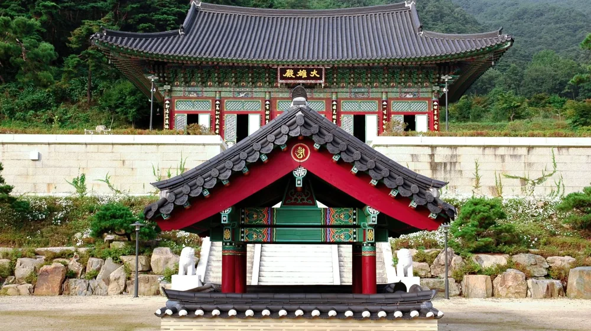

사찰 워케이션 장기 체류 비용, 최대 50% 아끼는 핵심 비교 가이드
사진: 정규송 Nui MALAMA / Pexels (무료 이미지, 출처 표기)
사찰 워케이션, 무엇을 기대할 수 있을까?

고요한 산사에서 일과 휴식을 병행하는 사찰 워케이션은 최근 많은 이들에게 주목받고 있습니다. 복잡한 도시를 벗어나 명상, 템플스테이 프로그램 참여, 자연 속 산책 등으로 몸과 마음을 정화하며 업무 효율까지 높일 수 있다는 장점 때문입니다. 장기 체류를 고려한다면 숙소 유형, 식사, 프로그램 참여 여부에 따라 비용이 크게 달라지므로, 자신에게 맞는 곳을 신중하게 선택하는 것이 중요합니다.
장기 체류 비용, 무엇이 핵심일까?
사찰 워케이션의 장기 체류 비용은 여러 요소에 의해 결정됩니다. 가장 큰 비중을 차지하는 것은 역시 숙소 유형입니다. 개인실인지 다인실(도미토리)인지에 따라 비용 차이가 크며, 편의시설(개별 화장실, 온돌 등) 유무도 영향을 미칩니다. 식사는 대부분 공양(사찰식 식사)으로 제공되나, 경우에 따라 간편 조리가 가능한 곳도 있습니다. 여기에 템플스테이 프로그램 참여 비용이 추가될 수 있으며, 장기 투숙 시 할인이 적용되는 경우가 많습니다.
2026년 8월 기준으로 주요 사찰들의 장기 체류 비용은 프로그램 구성과 숙소 형태에 따라 월 50만 원대부터 200만 원대까지 다양합니다. 단순히 저렴한 곳을 찾기보다는 자신이 중요하게 생각하는 가치(개인 공간, 프로그램 참여, 인터넷 환경 등)와 비교해 최적의 선택을 하는 것이 현명합니다.
주요 사찰 워케이션 장기 체류 비용 비교 (2026년 8월 기준)
사찰 워케이션은 '템플스테이'라는 이름으로 운영되는 경우가 많으며, 일부 사찰은 워케이션에 특화된 장기 체류 프로그램을 운영하기도 합니다. 아래 표는 일반적인 사찰 워케이션의 장기 체류 형태를 비교한 것으로, 실제 비용은 각 사찰의 운영 방식과 프로그램에 따라 다를 수 있습니다. 정확한 사항은 방문을 원하는 사찰의 공식 홈페이지나 템플스테이 통합 정보센터에서 다시 확인하시길 권장합니다.
비용 절약 팁과 추가 고려사항
장기 체류 비용을 절약하려면 몇 가지 팁을 활용할 수 있습니다. 첫째, 비수기나 평일 이용을 고려해보세요. 많은 사찰이 주말이나 성수기에는 높은 요금을 책정합니다. 둘째, 장기 체류 할인 혜택을 적극적으로 문의하세요. 대부분의 사찰은 1주일, 한 달 등 특정 기간 이상 머무를 경우 할인율을 적용해줍니다. 셋째, 식사 자율 여부를 확인하고 가능하다면 일부 식사를 직접 준비하는 것도 비용 절감에 도움이 될 수 있습니다.
또한, 비용 외에 고려해야 할 사항들이 있습니다. 사찰의 인터넷 환경(Wi-Fi 유무), 세탁 시설, 개인 작업 공간 유무 등은 장기 체류의 만족도를 좌우할 수 있습니다. 사찰마다 규칙과 분위기가 다르므로, 방문 전 사전 조사를 통해 자신에게 맞는 곳을 찾는 것이 중요합니다.
장기 체류 신청 절차 및 주의할 점
사찰 워케이션 장기 체류는 일반적으로 해당 사찰의 공식 홈페이지를 통해 신청합니다. 템플스테이 통합 정보센터(Templestay.com)에서도 여러 사찰의 프로그램 정보를 확인하고 예약할 수 있습니다. 신청 시에는 최소/최대 체류 기간, 숙소 유형, 식사 제공 방식, 프로그램 포함 여부 등을 꼼꼼히 확인해야 합니다. 일부 사찰은 장기 체류를 위해 간단한 면접이나 서류 제출을 요구하기도 합니다.
예약 전 환불 규정을 반드시 숙지하고, 개인적인 필요물품(노트북, 충전기, 세면도구 등) 외에 사찰에서 제공되는 물품 목록을 확인하세요. 사찰 내에서는 승려와 다른 참가자들을 존중하는 마음으로 조용하고 경건한 태도를 유지하는 것이 중요합니다. 업무에 집중하면서도 산사의 평화로운 분위기를 해치지 않도록 주의해야 합니다.
자주 묻는 질문
- Q: 사찰 워케이션 중 개인 노트북 사용이 가능한가요?
A: 대부분의 사찰 워케이션은 업무를 위한 노트북 사용을 허용하지만, 사찰 내 공공장소에서의 소음 발생이나 특정 시간대의 사용 제한이 있을 수 있습니다. 예약 전 사찰에 직접 문의하여 확인하는 것이 가장 좋습니다.
- Q: 워케이션 기간 동안 외출이 자유로운가요?
A: 사찰마다 규정이 다릅니다. 일부 사찰은 정해진 시간 외 외출을 제한하거나, 외출 시 미리 사찰 측에 알려야 하는 경우가 있습니다. 자유로운 외출을 원한다면 예약 전 해당 사찰의 규정을 확인해야 합니다.
- Q: 식사는 어떻게 제공되나요? 채식주의자를 위한 배려가 있나요?
A: 사찰에서는 일반적으로 육류가 포함되지 않은 사찰식 공양을 제공합니다. 채식주의자는 별도의 요청 없이도 사찰 음식을 편안하게 드실 수 있습니다. 다만, 특정 알레르기가 있다면 사전에 문의하는 것이 좋습니다.
🔗 이 글도 함께 보면 좋아요: 원격근무자를 위한 산사 워케이션, 실제 후기로 본 핵심 장단점
관련 추천 상품
이 포스팅은 쿠팡 파트너스 활동의 일환으로, 이에 따른 일정액의 수수료를 제공받습니다.